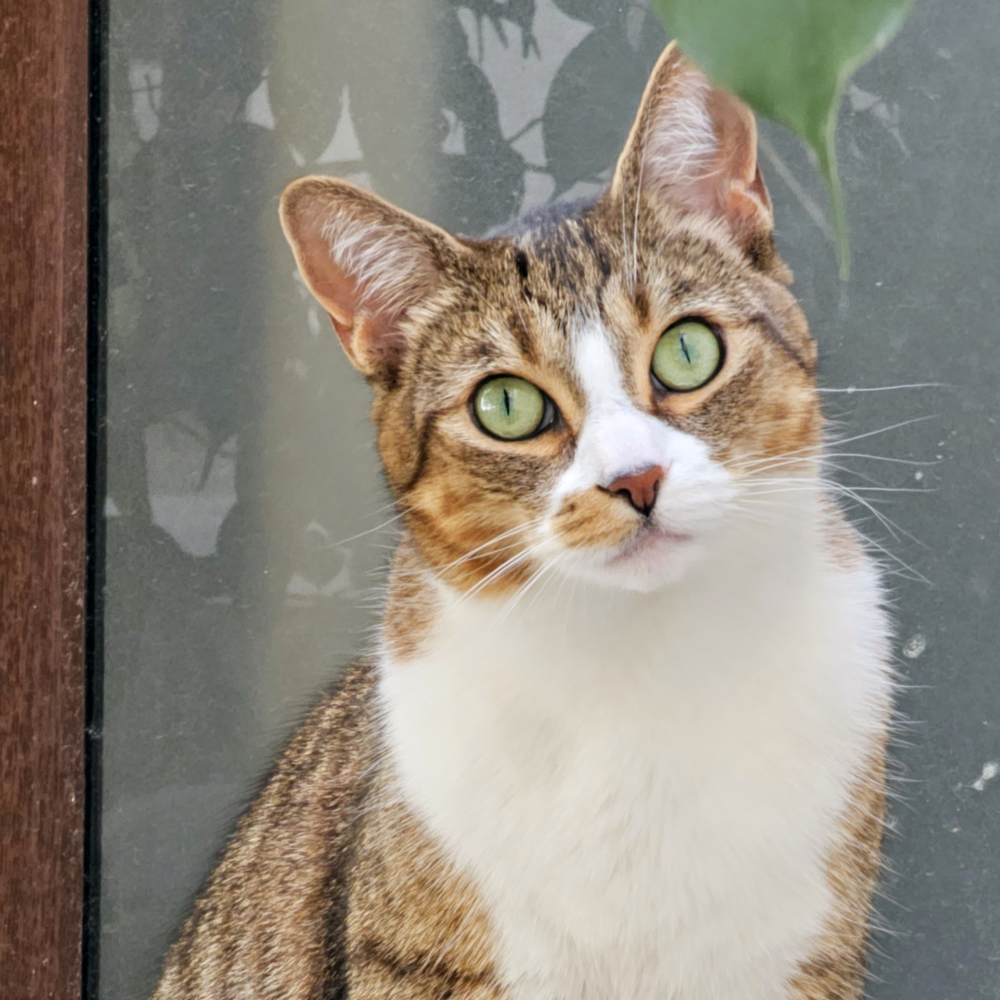

Esteban Verdugo
PhD Candidate, University of Michigan.
I am an Economics Ph.D. Candidate at the University of Michigan interested in macroeconomics and international economics.
I am from Santiago, Chile. I graduated from Universidad de Chile with a B.A. and M.S. in Economics.
Working Papers
“Aggregate Implications of Heterogeneous Inflation Expectations: The Role of Individual Experience”
with Mathieu Pedemonte and Hiroshi Toma
Revise and Resubmit, The Economic Journal
Work in Progress
“Trade Credit and Collateral Market Valuation”
Status: In Progress
Teaching
Graduate Student Instructor, University of Michigan (US)
- Ph.D. in Economics: Macroeconomic Theory
- M.Sc. in Applied Economics: Quantitative Methods
- Undergraduate: Principles of Macroeconomics, Intermediate Macroeconomics and Microeconomics, and Behavioral Economics
Lecturer, Universidad Tecnica Federico Santa Maria (Chile)
- Introduction to Economics
Teaching Assistant, Universidad de Chile (Chile)
- Ph.D. in Economics: Development
- M.Sc. in Applied Economics: Macroeconomic Theory
- Master of Public Policy: Urban Policy
- Undergraduate: Calculus I and II, Intermediate Microeconomics, Introduction to Macroeconomics, Advanced Macroeconomics, Labor Economics, Environmental Economics, and Urban Economics, among others.